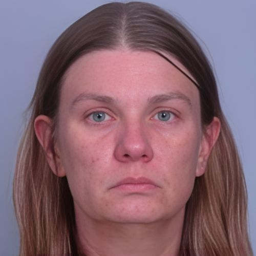

Court Records & Source Documents
The following primary-source documents were used in the reporting and production of this case. These are public filings and official government records.
-
📄
Federal Court Filing (PDF) — U.S. v. Aimee Marie Bock et al. (22-cr-223) — Report & Recommendation (motions to dismiss)
File path: /cases/files/8_us_v_bock_22-cr-223_report_and_recommendation_2024-11-01.pdf
-
📄
Minnesota OLA Special Review (PDF) — Minnesota Department of Education: Oversight of Feeding Our Future (June 2024)
File path: /cases/files/8_mde_oversight_feeding_our_future_special_review_june_2024.pdf
-
📄
State Court Filing (PDF) — Feeding Our Future v. Minnesota Department of Education — Fourth Amended Complaint (Jan 11, 2022)
File path: /cases/files/8_feeding_our_future_fourth_amended_complaint_2022-01-11.pdf
-
📄
Federal Search Warrant Application (PDF) — Sealed by court order (22-MJ-040)
File path: /cases/files/8_search_warrant_application_22-mj-040.pdf
Documents are provided for informational and educational purposes. Bad Money Times does not host sealed or restricted materials beyond what is publicly accessible.
Aimee Bock & Feeding Our Future — Federal Child Nutrition Funds Case File
According to federal court filings and government reporting, this case arises from an investigation into an alleged scheme involving federally funded child nutrition programs administered through the U.S. Department of Agriculture (USDA) and overseen in Minnesota by the Minnesota Department of Education (MDE). Feeding Our Future (a nonprofit sponsor) and associated sites were alleged to have submitted claims tied to meals purportedly served during the COVID-19 era, alongside allegations of falsified documentation and improper financial benefits.
Key Facts
Case Summary
In Minnesota, state oversight for these programs was administered through MDE, while sponsors (including nonprofits) oversaw individual sites serving meals. Public reports and filings describe how reimbursements flow from USDA to the state, to sponsors, and then to sites, and how oversight and monitoring requirements were altered during the COVID-19 era.
Court filings in the federal criminal case describe an indictment and extensive pretrial litigation, including motions challenging the sufficiency of allegations and legal theories in certain counts. Separate state-court filings document disputes between Feeding Our Future and MDE concerning application processing, participation, and administrative actions.
This case file collects the most important documents used for a documentary-style breakdown: the federal filing addressing motions, the Minnesota Office of the Legislative Auditor special review on oversight, the state-court amended complaint, and a federal search-warrant application.
Pattern Watch
- Waivers + reduced in-person verification pressure-testing program integrity.
- Rapid growth in sites/claims outpacing oversight capacity.
- Paperwork-based compliance systems vulnerable to fabricated records.
- Disputes between oversight agencies and program participants complicating enforcement timelines.
Viewer note
Do not harass or contact people involved. The purpose is understanding the pattern and protecting yourself.
This page summarizes publicly available documents and prosecutor allegations. It is not a determination of guilt. Use this to understand the mechanism and protect yourself.